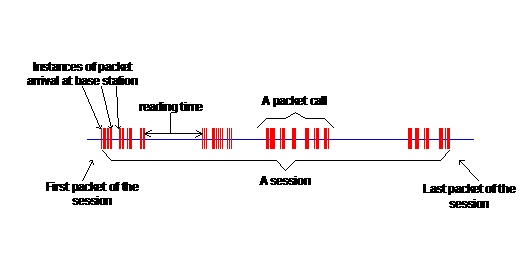
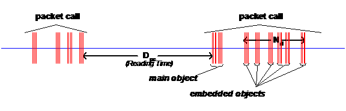
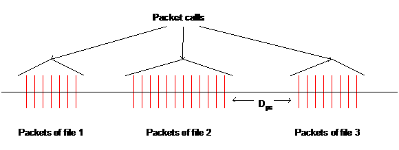

User’s
Manual
v.1.1
Table of Contents
2.3.
Uninstalling the application
3. Performing a Simulation: Step by
step
3.1. Configuring
the simulation
3.2. The events configuration group
3.3. The statistic results configuration group
3.4. The MAC Layer Configuration group
3.5. The network configuration group
4. Using the Network Configuration File
4.1. Configuring the node’s parameters
5. Using the application’s XML file
5.1. Description of source elements
Pamvotis 1.1 simulator is an
advanced WLAN Simulator for the IEEE 802.11 protocol including all its physical
layer extensions (IEEE 802.11a, IEEE 802.11b, IEEE 802.11g) and the IEEE
802.11e EDCA function for QoS. Basically
it performs a very detailed simulation of the MAC protocol, based on the IEEE
802.11 specification.
Pamvotis was developed in Java, using
only libraries included in the JRE. This way, it has limited hardware
requirements and is compatible with any operating system with JRE installed.
The major advantages of the
application concerning simulation of WLANs are the following:
Pamvotis 1.1 extends Pamvotis 1.0
with the following features:
·
Correction
of bugs reported by users in Pamvotis 1.0.
·
Addition
of FTP, HTTP and Video traffic sources, as described in 3GPP TR 25.892 V6.0.0
(see Appendix).
·
Ability
to have more than one traffic sources in each node.
·
Useful
functions to add / remove sources and nodes at any time during the simulation.
·
Ability
to simulate very long simulations (maximum is 50737 centuries of simulation
time, but don’t bother to try it because you will probably never see the
simulation results).
Operating System: Windows (95/98/Me/NT/2000/XP/2003),
Linux, Solaris, MacOS.
Disk Space: 800KB
Memory: 64MB
CPU Speed: 500MHz
Other: Java Runtime Environment 5.0
or higher.
If you installed the application on
Windows, using the installer, simply click Start, go to Program Files
and under the Pamvotis 1.0
menu click Pamvotis Simulator.
If you
use Linux, MACOS or Solaris, extract the .tar.gz folder, open a terminal,
browse to the folder and run the command:
Java –jar
pamvotis.jar
The above
process must be followed on Windows, for the case where you didn’t install the
program through the installer, but downloaded the .tar.gz folder. In this case,
you can additionally double click the file “pamvotis.jar” instead of opening a
command terminal and executing the above command.
Simply click the ‘Uninstall Pamvotis item of the ‘Pamvotis 1.0’ menu under Program Files, or go to Add remove
Programs on the Control Panel and
select Pamvotis 1.0 from the listed
applications.
The steps for performing a
simulation is to configure the simulation, run it and view the results.
Once you have loaded Pamvotis, an
application window is displayed named Pamvotis WLAN Simulator. All the
simulation parameters are configured from this window and are explained below:
Seed: Select the seed value which will
be used by the random number generator. Different values of seed produce
different results for the same configuration.
Simulation time: Select the simulation time in
seconds. Only integer values are allowed.
Pamvotis provides an amount of
useful statistic results concerning the MAC layer. Those can be configured from
the results configuration group:
Collected Values per
Statistic: Select the
number of collected values per statistic. This is the number of values that
will be written in the results files.
Choose statistics: Click on the button to choose the
statistics you want to be collected. Note: Even if no statistics are chosen, a
file containing the mean values (in relation to time) of all statistics will be
produced. Below there is a brief explanation of each statistic.
For each one of the selected
statistics, a text file is produced which contains the results. An extra file
containing the mean values of all the results is also produced.
Once you select the statistics you
want, press OK to return to the main configuration window.
Directory to save
results: Choose the
directory in which the results will be saved. The default directory is the
application installation directory.
In this group, the MAC layer
parameters of the IEEE 802.11 protocol are configured:
Access Mechanism: Select one of the three access
mechanisms to be used. (Basic access, RTS/CTS or CTS-to-Self). Note:
CTS-to-Self is a new protection mechanism only supported by IEEE 802.11g
protocol. If you are not familiar with this, or if you are simulating IEEE
802.11b or earlier networks, use RTS/CTS.
RTS Threshold: Specify the RTS threshold in bits.
If the packet is larger than this threshold then the protection mechanism will
be enabled. Only integer values are allowed. Note: If you want the protection
mechanism to be always enabled set the RTS Threshold to zero.
IEEE 802.11e EDCA
onfiguration: Pressing
this button, a new window appears where the parameters of EDCA are configured.
EDCA is the fundamental mechanism of IEEE 802.11e specification for QoS
support.
Note: If you do not want to use QoS,
just leave the parameters as is. Moreover if you use Network Configuration
File, be sure to set the AC parameter to 0 for all nodes.
If you want to use service
differentiation through EDCA, then three parameters must be defined for each
Access Category (AC):
There are three available options
there.
In the remainder of this subsection,
the meaning of each parameter for global node’s configuration is explained.
Physical layer
configuration: Select
one of the available physical layers for your network. The last option concerns
the case where IEEE 802.11b compliant nodes exist in an IEEE 802.11g network.
Nodes’ configuration: The following parameters must be
configured:
Number of Nodes: Insert the number of nodes that exist in your network.
Number of IEEE 802.11b Nodes: If you are simulating an IEEE 802.11g network
select the number of IEEE 802.11b compliant nodes that exist in your network.
Obviously, those must be less than the total number of nodes that exist in the
network.
Packet length
configuration: The
following items must be configured:
Packet Length Distribution: Select one of the distributions
the length of the generated packets obeys.
Packet Length mean: Select the mean value of the
packet length in bits. Note that the maximum value the protocol allows is
32768bits. If you set the mean to a higher value then the packet will be
fragmented.
Packet generation rate
configuration: The
following items must be configured:
Packet Generation Rate Distribution: Select the distribution the packet
generation rate obeys.
Packet generation rate mean: Select the mean value of packet
generation rate in packets per second.
Rate (only available in network
configuration file): The node’s data rate in b/s.
X-Position (only available in network configuration
file): The node’s horizontal coordinate in meters, related to an abstract
coordination center (point 0).
Y-Position (only available in network
configuration file): The node’s vertical coordinate in meters, related to an
abstract coordination center (point 0).
Coverage (only available in network
configuration file): The node’s coverage radius in meters.
Physical layer-PHY (only available in network
configuration file): The node’s physical layer type (802.11simple/a/b/g/mixed).
AC (only available in network
configuration file): The node’s access category for 802.11e QoS support (0, 1,
2 or 3).
In this point the simulation
configuration is completed. Click on the “Run” button to start the simulation execution.
The simulation execution window is opened which shows the simulation progress.
This may take from a minute to a century, mostly depending on the simulation
time and your CPU speed. The simulation execution runs as a process with normal
priority in the operating system. You can use the task manager to increase or
decrease the priority of the task. It is recommended not to use high or real
time priority because you will not be able to touch your PC until the
simulation is complete. You can pause or stop the simulation any time you want.
However, if you stop the simulation, results will be collected until this
moment but mean values will not be collected at all. Once you have done, close
the window to return to the main console.
Click on the “View Results” button
to view the results. Load the text file you are interested. The file shows the
results in respect to time. The “Mean Values” file shows the mean values of the
results related to time. You can copy the results and paste them to a
spreadsheet in order to process them.
Pressing the ‘View Results button
opens the corresponding text file with Notepad (for Windows) or with gEdit (for
Linux). If gEdit is not installed on Linux, then Mozilla Firefox is used. If
Mozilla does not exist, Netscape is used. If Netscape does not exist either,
then you should seriously consider stop using Linux.
For Linux users, in order to view
the results in the correct format, you must configure gEdit so the tab width to
be 8 chars (Edità Preferences à Editor tab à Tab width).
The network configuration file is
used when the nodes’ configuration parameters are different. In this case, a
special configuration is required for each node.
The source directory of the network
configuration file is the ‘conf’ folder of the application directory. However,
you can create your own configurations and load them to the application, from
another directory.
There are two types of network
configuration file that you can choose. The one is excel-based file and the
other is an ASCII text-based file.
Excel file is easier to use and
safer, concerning possible configuration mistakes. It is recommended for
Windows and MacOS users.
Text-based file is the only option
for Linux and Solaris users. At the moment Pamvotis 1.0 is developed, existing
Java libraries for reading excel files from Java applications are not mature
and stable enough. So, a text-based network configuration file is used. Note:
Selecting an excel-based network configuration file while running the
application is Linux or Solaris, will end up in unexpected results. The program
does not prohibit you from doing this, so the correct network configuration
file selection is on the user’s responsibility.
In order to configure the nodes’
parameters you should open the network configuration file and edit it. Once you
have configured your parameters, save the file (or save it with another
filename) and return to Pamvotis main console.
The network configuration file is a
simple Excel or ASCII file from which Pamvotis reads the nodes’ parameters.
Move to the beginning of the network
configuration file. An explanation section exists (yellow box for excel-based
and a rectangle for the text-based). Read this section carefully. After the
explanation section, the parameter’s headers exist.
Begin to write after the parameters
headers. This means, after the green line in the excel based file or after the
dotted line in the text-based file.
The parameters to be configured are
explained below:
The application’s XML file is an
alternative method to configure a simulation. Using this method, a text-based
configuration can be done, without having to pass through all configuration
steps when there is the need to repeat a simulation with minimal changes.
Note: All new features supported by
Pamvotis 1.1 are applicable only through the application’s XML file. This means
that, if you want to configure sources other than generic, or if you want to
configure nodes with more than one sources, then you must do it through the
application’s XML file.
Despite the fact that the document
is based on the XML language, its structure is simple, so there is no need to
know XML in order to configure it.
The application’s XML file is always
stored in the folder PAMVOTIS_HOME/config. Hence, pay attention to always keep
a backup of the configuration files you create. A folder named bkp exists for
this purpose, where backups of the original configuration files exist. It is
recommended not to modify the files of this folder.
The remaining of this section
describes the structure of the XML network configuration file.
Thus, if we want to collect values for the
first three results and for the last, we would have to define the outResults
parameter as tb_tp_ut_ql_. Actually, the underscore is not necessary, but is
useful for separating the substrings. If you do not want any results to be printed,
do not leave this parameter empty. Just define it with an underscore or another
character.
In this
subsection, a description of the parameters of each source element is outlined.
This source
represents a generic (abstract) source, producing abstract traffic, obeying
specific parameters. Use this source by specifying type=”generic” in the definition of the source element.
This source represents a source generating FTP
traffic, as described in 3GPP TR 25.892 V6.0.0 (see Appendix). Use this source
by specifying type=”ftp” in the
definition of the source element. For the explanation of the parameters that
follow, please have a look at the appendix.
This source represents a source generating HTTP
traffic, as described in 3GPP TR 25.892 V6.0.0 (see Appendix). Use this source
by specifying type=”http” in the definition
of the source element. For the explanation of the parameters that follow,
please have a look at the appendix.
This source represents a source generating
video traffic, as described in 3GPP TR 25.892 V6.0.0 (see Appendix). Use this
source by specifying type=”video” in
the definition of the source element. For the explanation of the parameters
that follow, please have a look at the appendix.
In order to prevent possible errors
of the application, pay attention to the following:
A backup
of the network configuration file can be found in the ‘bkp’ folder located in the application installation directory.
It is recommended not to edit this file and keep it as a backup of the original
network configuration file.
Pamvotis 1.1 Simulator was created
by Dr. Dimitris El. Vassis and Vassilis Zafeiris, a telecommunications engineer
and a software engineer respectively.
Pamvotis took its name from a lake
in
Pamvotis was designed for academic
purposes only. It is not a commercial application. The application and the
source code may be distributed or modified under the terms of the GNU General
Public Lisence. See the Lisence.txt
file located in the ‘doc’ folder of the application directory for more
information.
For any information and for any
comment (well intentioned or not) concerning Pamvotis, please contact Dimitris
Vassis:
Special regards to the following
people:
Mr Gary Gaatz for his valuable remarks on some
bugs concerning IEEE 802.11b.
Mr Stelios Koukoutsidis for his valuable remarks on some
incorrect parameter definitions concerning IEEE 802.11a.
Ms. Rachel Vecchitto for providing a class for opening a URL with the default browser in
older versions of Java.
Copyright© - 2008 – Dimitris El.
Vassis – Vassilis Zafeiris - All Rights Reserved
Three different traffic types are
suggested for evaluation purposes.
A.3.4.1 HTTP
Traffic Model Characteristics

Figure 44: Packet Trace of a Typical Web Browsing Session
Figure 44 shows the packet trace of a typical
web browsing session. The session is
divided into ON/OFF periods representing web-page downloads and the
intermediate reading times, where the web-page downloads are referred to as
packet calls. These ON and OFF periods are a result of human interaction where
the packet call represents a user’s request for information and the reading time
identifies the time required to digest the web-page.
As is well known, web-browsing traffic is
self-similar. In other words, the
traffic exhibits similar statistics on different timescales. Therefore, a packet call, like a packet
session, is divided into ON/OFF periods as in Figure 44. Unlike a packet session, the
ON/OFF periods within a packet call are attributed to machine interaction
rather than human interaction. A
web-browser will begin serving a user’s request by fetching the initial HTML page
using an HTTP GET request. The retrieval
of the initial page and each of the constituent objects is represented by ON period within the packet call while
the parsing time and protocol overhead are represented by the OFF periods
within a packet call. For simplicity,
the term “page” will be used in this paper to refer to each packet call ON
period.

Figure 45: Contents in a Packet Call
The
parameters for the web browsing traffic are as follows:
- SM: Size of the main object in a page
- SE: Size of an embedded object in a page
- Nd: Number of embedded objects in a page
- Dpc: Reading time
- Tp: Parsing time for the main page
HTTP/1.1 persistent mode transfer is used to download
the objects, which are located at the same server and the objects are
transferred serially over a single TCP connection as modelled in[5]. The
distributions of the parameters for the web browsing traffic model are
described in Table 17. Based on observed packet size distributions, 76% of the
HTTP packet calls should use an MTU of 1500 bytes, with the remaining 24% of
the HTTP packet calls using an MTU of 576 bytes. These two potential packet sizes also include
a 40 byte IP packet header (thereby resulting in useful data payloads of 1460
and 536 bytes, respectively), and this header overhead for the appropriate
number of packets must be added to the object data sizes calculated from the
probabilistic distributions in Table 17.
|
Component |
Distribution |
Parameters |
|
|
Main object size (SM) |
Truncated Lognormal |
Mean
= 10710 bytes Std. dev. = 25032 bytes Minimum = 100 bytes Maximum = 2 Mbytes |
|
|
Embedded object size (SE) |
Truncated Lognormal |
Mean
= 7758 bytes Std. dev. = 126168 bytes Minimum = 50 bytes Maximum = 2 Mbytes |
|
|
Number of embedded objects per page (Nd) |
Truncated Pareto |
Mean
= 5.64 Max. = 53 |
(NOTE) |
|
|
Exponential |
Mean = 30 sec |
|
|
Parsing time (Tp) |
Exponential |
Mean = 0.13 sec |
|
|
Note: Subtract k from the generated random value to obtain Nd |
|||
Table 17: HTTP Traffic
Model Parameters
A.3.4.2 FTP Traffic Model Characteristics
In FTP applications, a session consists of a
sequence of file transfers, separated by reading
times. The two main parameters of an
FTP session are:
1. S : the size of a file to be transferred
2. Dpc: reading time, i.e., the time interval between end of download of the previous file and the user request for the next file.
The underlying transport protocol for FTP is
TCP. The model of TCP connection
described in [5]will be used to model the FTP
traffic. The packet trace of an FTP
session is shown in Figure 46.

Figure 46: Packet Trace in a Typical FTP Session
The parameters for the FTP application sessions
are described in Table 18.
Table 18: FTP Traffic Model Parameters
|
Component |
Distribution |
Parameters |
|
|
File size (S) |
Truncated Lognormal |
Mean = 2Mbytes Std. Dev. = 0.722 Mbytes Maximum = 5 Mbytes |
|
|
|
Exponential |
Mean = 180 sec. |
|
Based on the results on packet size
distribution, 76% of the files are transferred using and MTU of 1500 bytes and
24% of the files are transferred using an MTU of 576 bytes. Note that these two
packet sizes also include a 40 byte IP packet header (thereby resulting in
useful data payloads of 1460 and 536 bytes, respectively) and this header
overhead for the appropriate number of packets must be added to the file sizes
calculated from the probabilistic distributions in Table 18. For each file
transfer a new TCP connection is used whose initial congestion window size is 1
segment (i.e. MTU).
A.3.4.3 NRTV (Near Real Time Video) Traffic Model Characteristics
This section describes a model for streaming
video traffic on the forward link. Figure 47 describes the steady state of video streaming traffic from the network, as
seen by the base station. Latency at
call startup is not considered in this steady-state model.
Figure 47: Video Streaming Traffic Model
A video streaming
session is defined as the entire video streaming call time, which is equal to
the simulation time for this model. Each frame of video data arrives at a
regular interval T determined by the number of frames per second (fps). Each frame is decomposed into a fixed number
of slices, each transmitted as a single packet.
The size of these packets/slices is distributed as a truncated Pareto
distribution. Encoding delay, Dc, at the
video encoder introduces delay intervals between the packets of a frame. These intervals are modelled by a truncated
Pareto distribution.
The parameter TB
is the length (in seconds) of de-jitter buffer window in the mobile station,
and is used to guarantee a continuous display of video streaming data. This parameter is not relevant for generating
the traffic distribution, but it is useful for identifying periods when the
real-time constraint of this service is not met. At the beginning of the simulation, it is
assumed that the mobile station de-jitter buffer is full with (TB x
source video data rate) bits of data.
Over the simulation time, data is “leaked” out of this buffer at the
source video data rate and “filled” as forward link traffic reaches the mobile
station. As a performance criterion, the
mobile station can record the length of time, if any, during which the
de-jitter buffer runs dry. The de-jitter
buffer window for the video streaming service is 5 seconds.
Using a source video rate of 64 kbps, the video traffic model parameters
are defined in Table 19.
Table 19: Video Streaming Traffic Model Parameters.
|
Information types |
Inter-arrival time between the beginning of each frame |
Number of packets (slices) in a frame |
Packet (slice) size |
Inter-arrival time between packets (slices) in a frame |
|
|
Distribution |
Deterministic (Based on 10fps) |
Deterministic |
Truncated Pareto (Mean= 50bytes, Max= 250bytes) |
Truncated Pareto (Mean= 6ms, Max= 12.5ms) |
|
|
Distribution |
100ms |
8 |
K = 40 bytes |
K = 2.5ms |
|